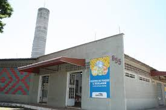
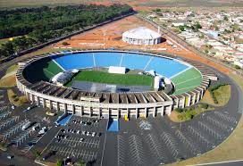
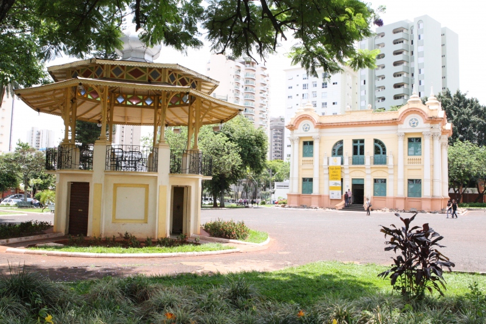
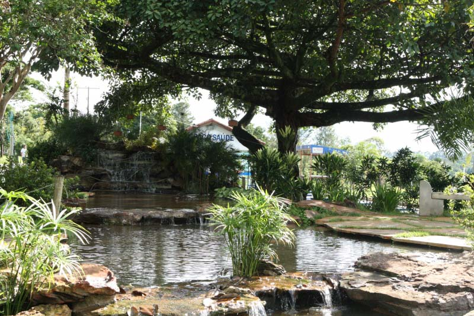
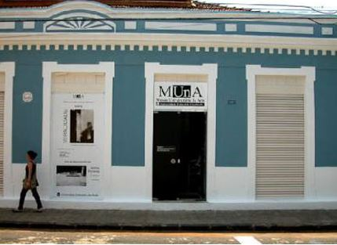

Casa da Cultura
 |
CASA DA CULTURA DE UBERLÂNDIA |
Centro de Fiação e Tecelagem
|  |
Endereço: Avenida Francisco Galassi, 855 - Bairro: Patrimônio
Telefone: (34) 3238-7667 |
Estádio João Havelange
|  |
Endereço: Av. José Roberto Migliorini - Santa Mônica, Uberlândia - MG, 38408-150 |
Mercado Municipal
 |
Endereço: Rua Olegário Maciel, 255 - Centro, Uberlândia - MG, 38400-084 |
Museu Municipal de Uberlândia
|  |
|
Oficina Cultural
 |
|
Endereço: Rua Tiradentes, 24 - Fundinho, Uberlândia - MG, 38400-200 |
|
Parque do Sabiá
|  | |
Com uma área de 1.850.000 m², o Parque do Sabiá possui dentre seus atrativos um zoológico, setor de piscicultura, aquário e pista para caminhada e cooper. Além disso, ele possui um parque infantil, oito campos de futebol, duas piscinas, sete lagos e um bosque natural de 200 mil m². O local é aberto de 3ª à Domingo das 7 às 17h30. Endereço: Av. José Roberto Migliorini - Santa Mônica, Uberlândia - MG, 38408-150
|
|
Parque Victorio Siquerolli
 |
|
Endereço: Av. Nossa Senhora do Carmo, 707 - Jardim América I, Uberlândia - MG, 38401-710
Telefone:(34) 3212-1692 |
|
Reservatório de Miranda
 |
A "Represa de Miranda", tem uma extensão de 50 Km2. Suas margens são ocupadas por loteamentos, chácaras e clubes de lazer. Uma das maiores atrações turísticas do reservatório é a Usina de Miranda. Distante cerca de 25 Km do centro da cidade. O acesso para as margens do lago é feito pela Br-365, sentido Uberlândia-Araxá. |
Museu Universitário de Arte – MUnA
|  |
Endereço: Praça Cícero Macedo, 309, Bairro Fundinho Telefone: 34 3231-9121 Horário de Funcionamento: de segunda à sexta, das 08:30 às 17:00h |
Museu de Minerais e Rochas
Endereço: Campus Santa Mônica da UFU, no Bloco 1Q Telefone: 34 3239-4204 Horário de Funcionamento: segunda à sexta das 08:30h às 11:30h e das 14:00h às 17:00h |
Museu do Índio
Endereço: Rua Vitalino Rezende do Carmo, 116, Bairro Santa Maria Telefone: 34 3236-3707 Horário de Funcionamento segunda à sexta, das 08:00h às 11:00h e das 13:30h às 17:00h |
Centro de Documentação e Pesquisa em História – CDHIS
Endereço: Campus Santa Mônica da UFU, no Bloco 1Q |
Cachoeira do Sucupira
•Altura: 15 metros |
Cachoeira dos Namorados
•Altura: 21 metros
|
Cachoeira Bom Jardim
 |
•Altura: 11 metros
|
Cachoeira Rio Claro
 |
•Altura: 43 metros
|
Cachoeira do Mirandinha
•Altura: 25 metros
|
Cachoeira do Britador
•Altura: 30 metros
|
Cachoeira das Irmãs
•Altura: 42 metros
|
Primeira cachoeira – Salto Brasil
•Altura: 5 metros
|